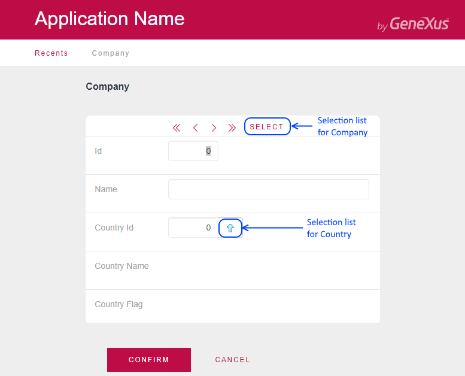
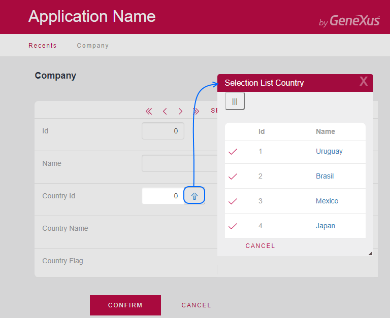
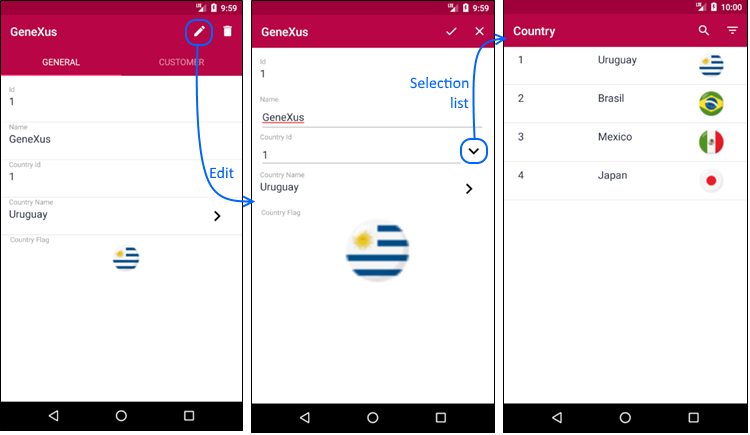

GeneXus includes referential integrity controls in programs related to Transactions (and Business Components), in addition to generating selection lists that prove quite useful for inserting and updating related data.
A Selection List is a panel (web or smart device) created automatically by GeneXus to provide end users with the possibility of querying the data existent in a specific table in the database in order to select certain data, returning its identifier.
For instance, when an end user executes Company Transaction in order to edit a specific company whose identifier is not at hand, it is possible to select it through a panel showing all companies. If upon entering a customer’s country (CountryId attribute, foreign key) you ignore the values of the countries entered, you can activate a selection list that will enable us to query all the countries on the COUNTRY table and select the one we want.
When generating for Web environment, for each primary key and foreign key in a Transaction you will have the corresponding selection list.

In the web Transaction, to select a company´s country in runtime you click on the image to the right of the CountryId attribute.

When generating for Mobile & Smart Devices environment, selection lists will be created exclusively for the foreign keys present in the Section (General) of the corresponding Work With (since in Smart Devices, the location to interactively enter/modify the table’s information is not the Transaction but rather the Section(General) of WorkWithDevices<Transaction>).
For example, to select a company's country, open the company detail in edit mode and select the prompt icon on the CountryId attribute.

| Backlinks | ||
| How does GeneXus implement selection lists? | It is possible to modify selection lists? | Toc:Native Mobile Applications Development |
| Prompt | ||
| When are selection lists created? |